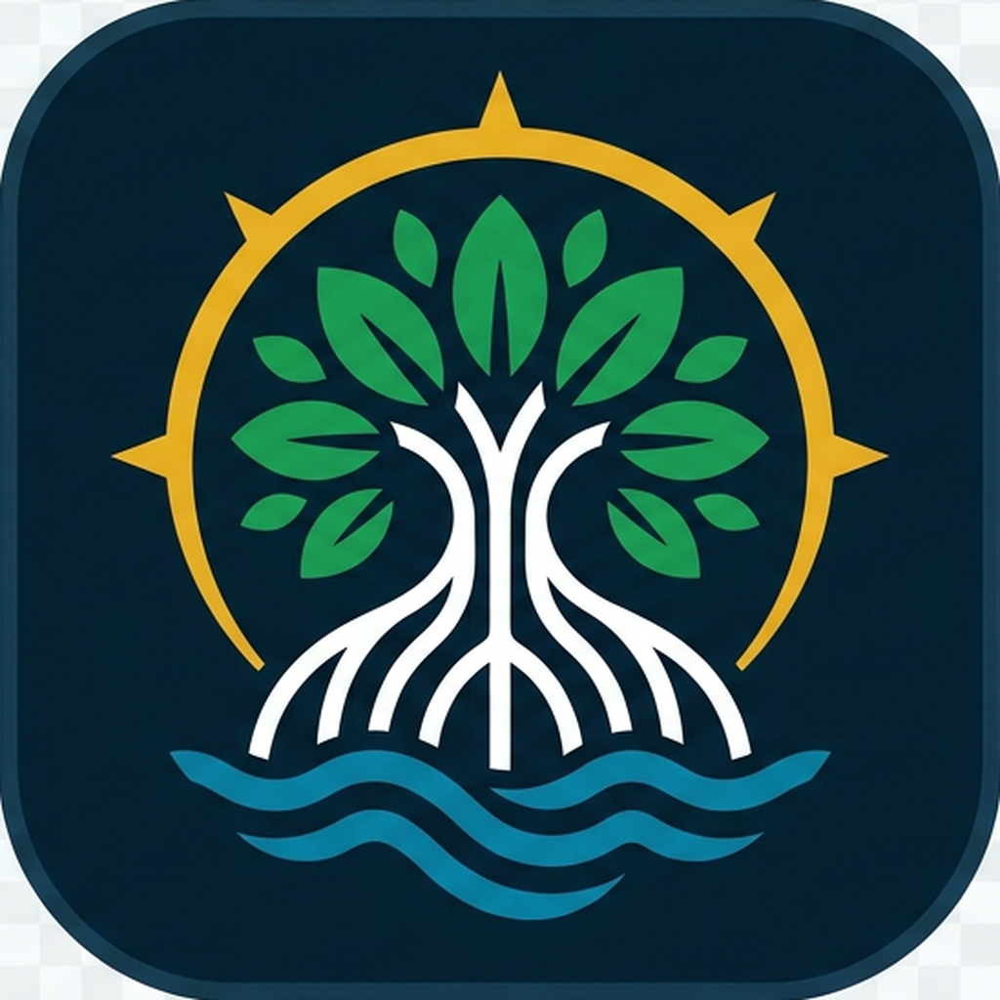

Brief Ejecutivo y Ficha de Entrega: plataforma offline-first de ciencia ciudadana, bot interactivo de WhatsApp, validación visual con IA (100 % anti-falsos), detección satelital de fuego NASA FIRMS en vivo y CRM de decisiones operativas para los ecosistemas de manglar del Atlántico.
/reportar) o directo desde
WhatsApp con timestamp exacto (ISO-8601), GPS honesto (el modo demo
salón se etiqueta SIMULADO (DEMO) en UI, BD y exportaciones), dictado por voz universal móvil y
cruce espacial inmediato incluso en modo avión contra los
9,408 polígonos del KMZ CRA, zonas de manglar probable y las 828 ha por revisar.
Se integra en tiempo real el satélite NASA FIRMS VIIRS 375 m (NOAA-20 y NOAA-21) para
detectar focos de fuego alrededor del Atlántico cada 24 h.
google/gemini-2.5-flash: 15/15 = 100 %,
rechaza fotos tomadas a pantallas de PC/portátiles e interiores con 0/25 bloqueando falsas
alertas rojas), Semáforo de Confiabilidad (0–100 pts), contraste en PostGIS con los
524 puntos reales CRA, corroboración de reportes cercanos (≤ 1.8 km) y
doble validación comunitaria + académica (/validar).
/p/1 a /p/4) sin registro con
audioguía en voz colombiana (MP3 offline), Pasaporte Costero de 4 sellos,
retos en terreno y guía de las 4 especies locales.
Bot Interactivo de WhatsApp con carrusel deslizable de 4 fotos, ubicación en 1 toque, notas
de voz y alerta de fuego NASA. Modo Escuelas PRAES (/escuelas) con cierre de
ciclo público por código MGL-XXXX y módulo de Formulación MGA / CO₂e
(/participacion). Lenguaje 100 % claro y amigable para cualquier edad.
MGL-ZN-XXXX.Canal: WhatsApp.| Tiempo | Pantalla / Canal | Demostración en Vivo de Alto Impacto |
|---|---|---|
| 0:00 – 1:15 | Video Demo 1080p (o Portada /) |
Reproduce el video oficial (75 s) o muestra el reto territorial: 1,069.6 ha probables, 828 ha por verificar y 160,676 t de carbono azul. |
| 1:15 – 2:30 | Celular NFC /p/3 + Turista |
Acerca el chip NFC o abre /p/3: reproduce la audioguía en voz colombiana, muestra el Pasaporte Costero (4 sellos) y las 4 especies del Atlántico. |
| 2:30 – 4:15 | WhatsApp Bot + /reportar Offline |
Muestra el carrusel de 4 fotos en WhatsApp, toca 🔥 Fuego NASA hoy y sube una foto de pantalla de PC para probar el bloqueo IA 0/25 anti-falsos; luego envía una evidencia real. |
| 4:15 – 5:45 | CRM /admin + Satélite NASA |
Muestra el reporte entrando en tiempo real con badge Canal: WhatsApp, el Monitor NASA FIRMS, el Simulador de Cuadrillas y despacha un correo con minimapa en 1 clic. |
| 5:45 – 7:00 | /validar, /cra y Datos Abiertos |
Cierra el ciclo con doble validación, descarga el archivo GeoJSON/CSV anonimizado (Ley 1581) y muestra la trazabilidad pública para escuelas PRAES (/escuelas). |
| Capa / Componente | Tecnología / Modelo Documentado | Estado Verificado en Producción |
|---|---|---|
| PWA Offline-First | Next.js 16, React 19, TypeScript, Tailwind v4, Service Worker liviano (< 250 KB), IndexedDB + Turf.js offline | 24/24 rutas OK Optimizado 2G/3G (-91 % peso) |
| Base Espacial & API | PostgreSQL 17 + PostGIS (Supabase), 9,408 polígonos KMZ CRA + 524 puntos ground-truth + Realtime + Storage | Activo en vivo Datos abiertos Ley 1581 (0 PII) |
| IA Visión & Voz | google/gemini-2.5-flash (OpenRouter) para auditoría anti-falsos (visión) y dictado/notas de voz (input_audio) |
15/15 = 100 % Bloquea pantallas de PC e interiores |
| Omnicanalidad & Alertas | Zernio API (WhatsApp interactivo, Telegram, IG, FB, SMS) + Motor SOLID (src/core/alerts/) + SMTP minimapa |
13/13 tests OK Webhook vivo 200 OK |
| Satélite & Sensores | NASA FIRMS VIIRS 375 m (NOAA-20/21, cero API key) + API IoT /api/telemetry (5 variables agua CRA/Uninorte) |
En vivo 24 h 4 focos Atlántico / 19 Caribe hoy |
| Multimedia & Voz | Microsoft Neural TTS (es-CO-SalomeNeural audioguías, es-MX-DaliaNeural video demo) + HyperFrames 1080p |
MP4 1080p público 75.5 s · 24.2 MB |